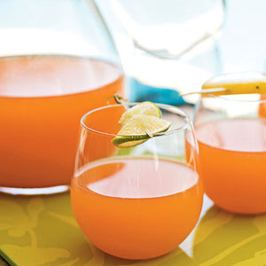

| Rum Punch | |
|---|---|
|  |
Combine sugar and 1/2 cup water in a small saucepan over high heat; bring to a boil. Cook until sugar dissolves, stirring occasionally. Remove from heat; transfer sugar mixture to a small bowl. Chill.
Combine sugar mixture, mango juice, and next 4 ingredients (through grenadine) in a large bowl; mix well. Stir in soda. Serve over ice. |